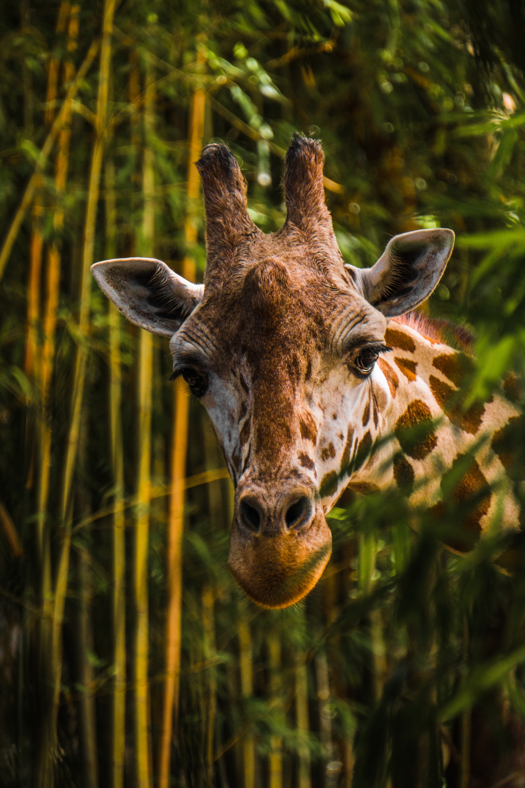
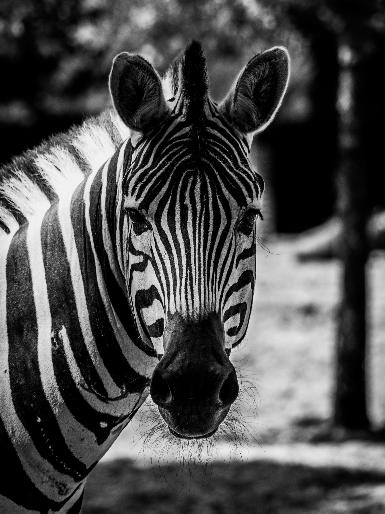
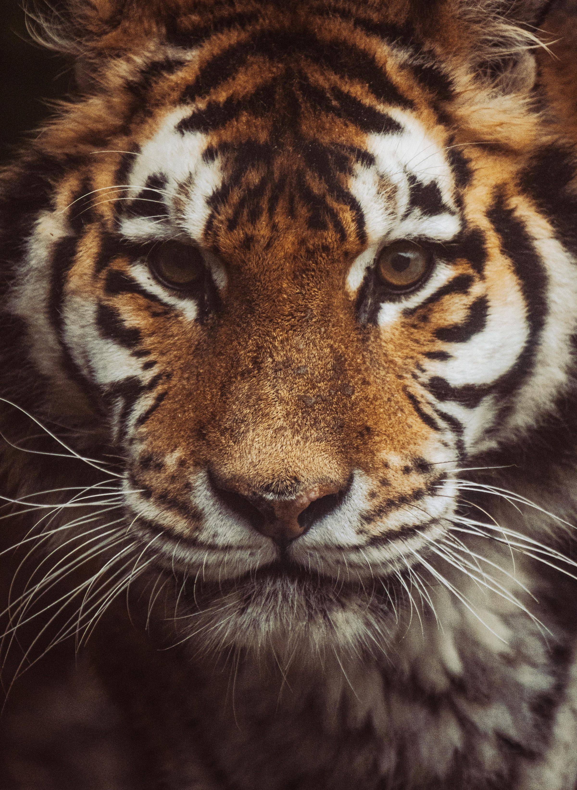
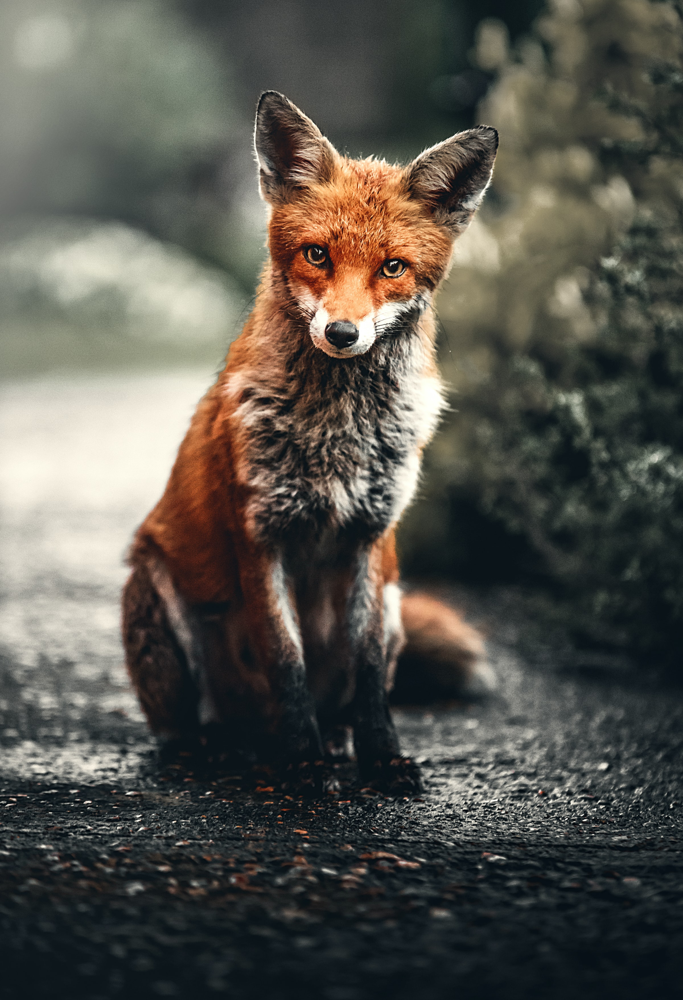
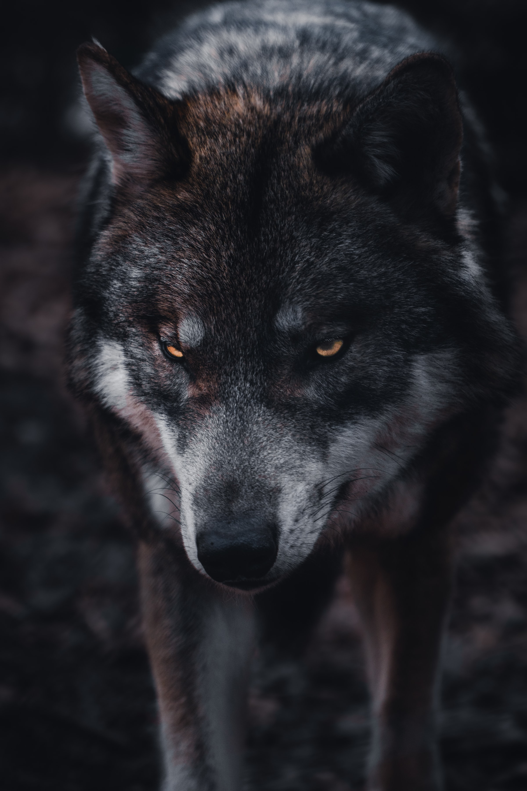
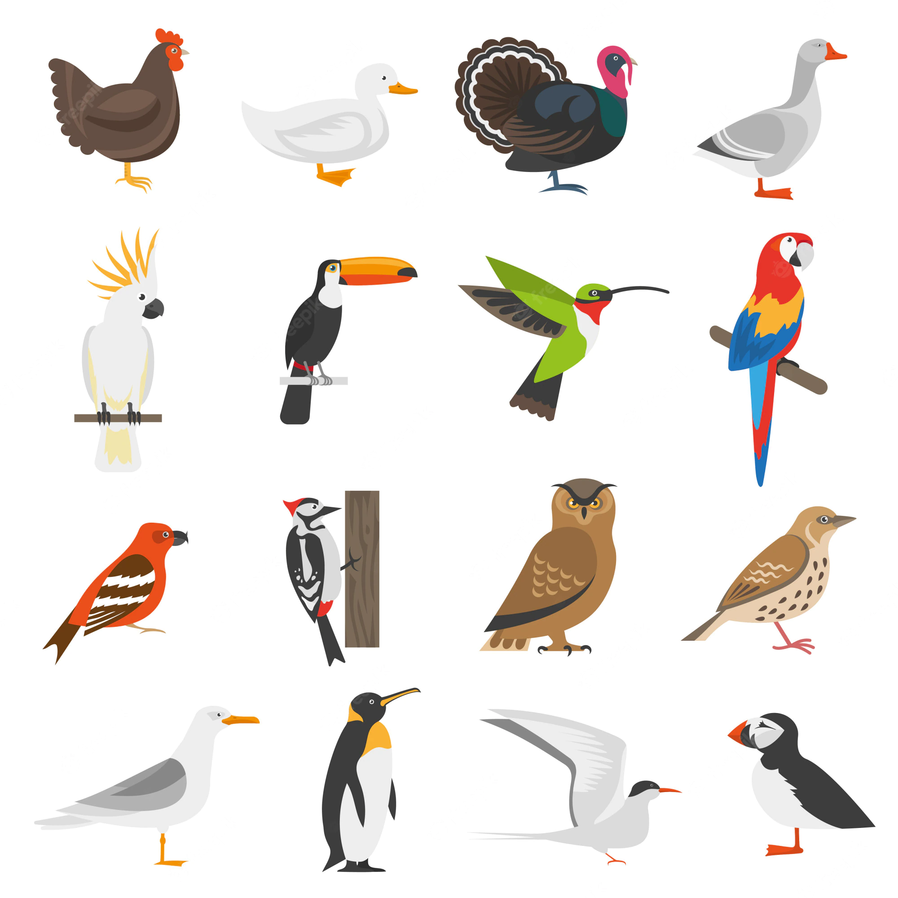
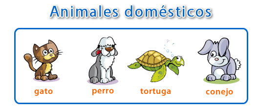

El tema que a continuación trataremos “animales salvajes y domésticos”, tiene como fin que niños y niñas aprendan a diferenciar que animales pueden vivir con nosotros y domesticarse y cuales son salvajes y no pueden estar bajo nuestro cuidado. Utilizaremos algunas herramientas tecnológicas para facilitar los contenidos. !Niños! ¿¿Están listos para conocer sobre los animales??
¿Que son los animales salvajes?
 LEÓN
LEÓN

JIRAFA

CEBRA

TIGRE

ZORRO

LOBO
Los animales salvajes viven libres en el mar, en el aire, en los ríos ,en las montañas, en los bosques , en la selva, en el desierto... ellos se tienen que buscar el alimento y se defienden de otros animales . Cada animal vive en el lugar donde sabe que puede encontrar más fácilmente la comida para sus crías y para él.
¿Que son las aves?
Las aves son animales vertebrados generalmente adaptados al vuelo, aunque muchos también pueden correr, saltar, nadar y bucear. Algunos, como los pingüinos, han perdido la capacidad de volar, pero conservaron sus alas como vestigio.
Tipos de aves
Hay varios modelos de clasificación para las aves. Uno de ellos consta de 2 tipos de aves: Corredoras. No pueden volar, tienen alas pequeñas y largas patas, y su esternón no tiene forma de quilla. Por ejemplo, el avestruz y el pingüino. De vuelo. Tienen las patas cortas, alas de gran envergadura para volar, y el esternón en forma de quilla. Pero esta clasificación es muy amplia. Otra mucho más específica incluye los tipos de aves siguientes: Rapaces. Tienen grandes garras y picos afilados. Por ejemplo: el águila, el halcón, el cernícalo, el búho y la lechuza. Pájaros. Son pequeños y muy ligeros (con excepciones). Se caracterizan por emitir sonidos muy peculiares. A este grupo pertenecen los gorriones, el cuervo, la golondrina, el atrapamoscas, etc. Para muchos, resultan las mejores aves domésticas. Corredoras. Grandes y veloces, pero incapaces de volar. Por ejemplo, el avestruz, el casuario y el ñandú. Zancudas. Son esbeltas desde las patas hasta el pico, con cuello largo. Entre ellas figuran la grulla, la cigüeña, la garza y otras similares. Gallináceas. Patas robustas, alas pequeñas y un pico corto pero fuerte. Aquí tenemos la gallina, el codorniz, el faisán, etc. Anseriformes. Incluye a los patos, cines, gansos, ocas y otras aves con pico aplanado y patas membranosas para nadar. Esfenisciformes. No pueden volar, pero son excelentes nadadoras pues en lugar de patas tienen aletas. Como ejemplos de este tipo de aves están los pájaros bobos y el pingüino.
¿Que son los animales domésticos?
animales domésticos son los que han dejado su hábitat salvaje y han aprendido a vivir junto al hombre. Para hacerlo posible, fue necesario que pasaran por algo que se conoce como domesticación. Este es un proceso que tiene el objetivo de acostumbrar al animal al ser humano, su entorno y las actividades que realiza.